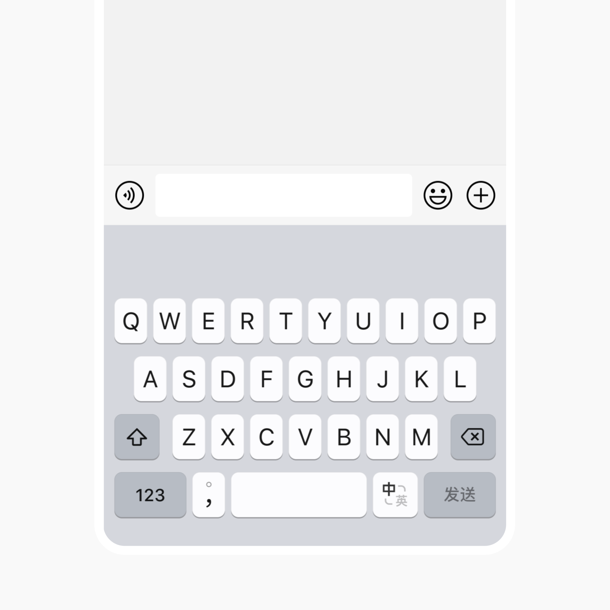
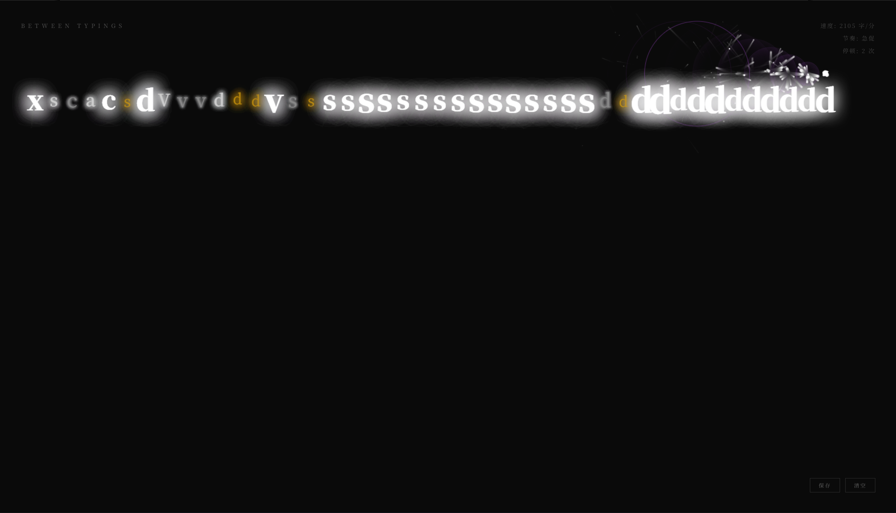
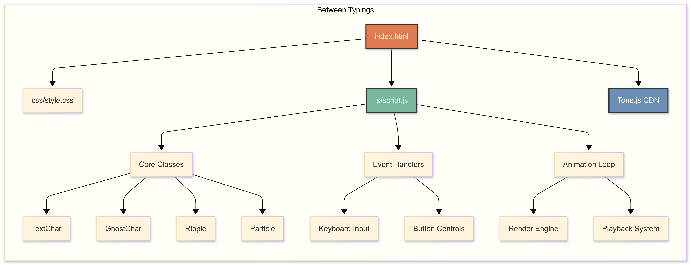
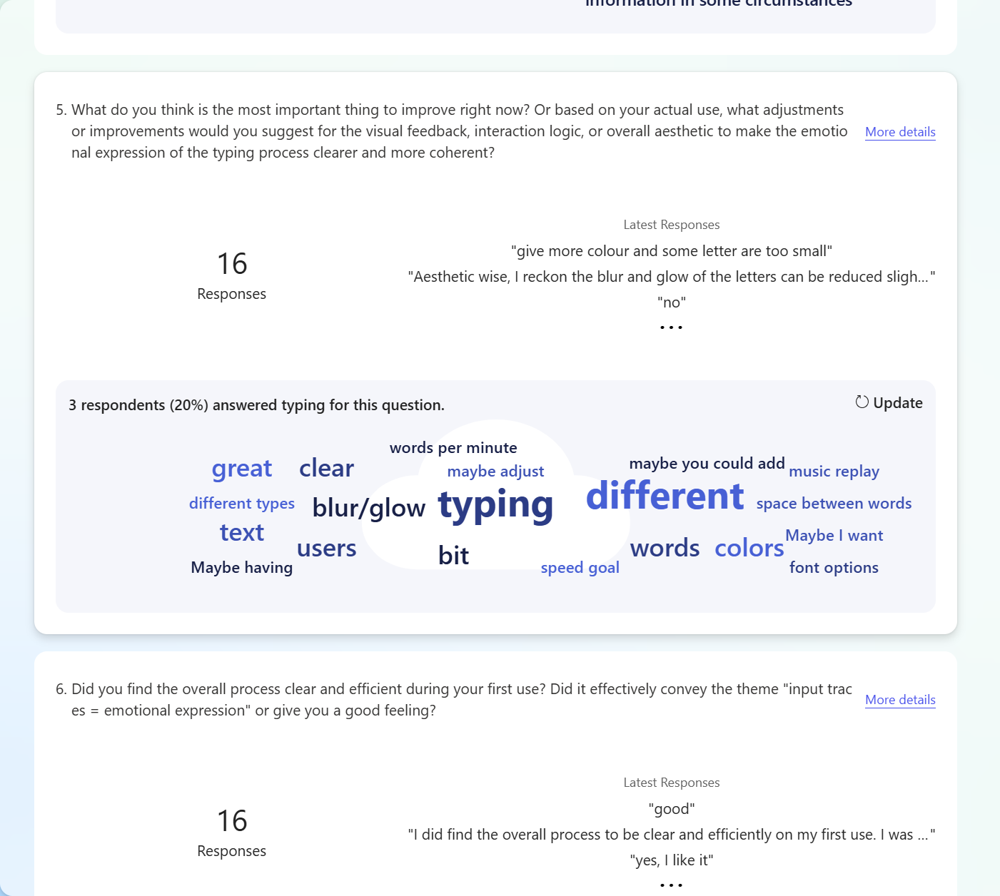
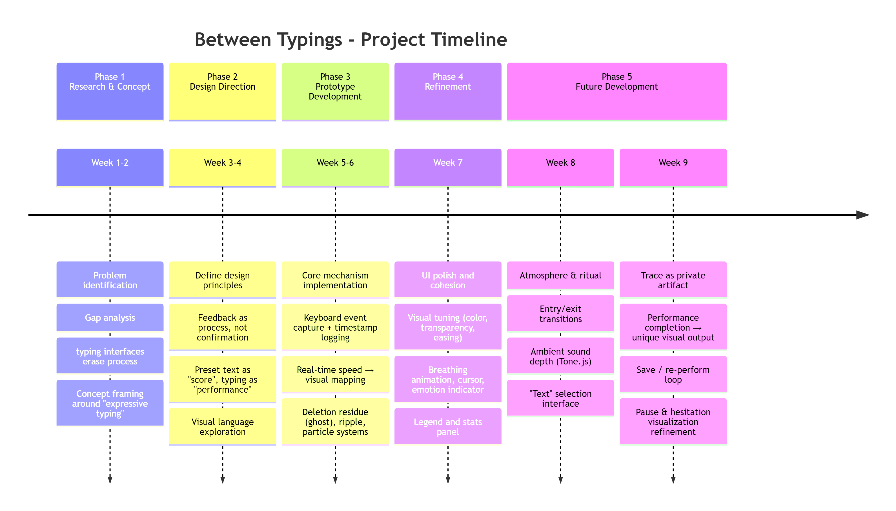

Patrick McMahon's Mediated Expression Studio Work
Yi Fan S4106162
Intro Exercise
Hello, my name is Yi FAN (Spike). This English name comes from the protagonist of the old animated road movie Cowboy Bebop. I started learning digital media because I initially wanted to work in interactive design. I enjoy small, practical, or meaningful projects. The feeling of going From design sketches to on-screen interactive elements, is quite enjoyable for me.
My GitHub profile is https://github.com/yichiban1
In-class experiments
Studio project speculation:"Between typings"
Project purpose: from input tools to expression media
1."Eliminate the trace of input" Efficiency, accuracy, and accuracy of predictions This is the same thing that mainstream input methods and word processing software (such as Microsoft Word, Google Docs, and Apple's default input method) are committed to. They pursue efficiency, accuracy, and accuracy in predictions, with the goal of making typing as transparent as possible, allowing the user's mind to flow to the screen without barriers. The characters on the screen are standardized, indifferent, homogeneous. Whether the user taps the keyboard angrily or hesitates to tap the keys, the final "a" is indistinguishable at the pixel level.

2.In the case of Apple's default input method, it doesn't care at all when my typing speed changes, because it only cares about whether the final input string is correct, and its automatic error correction mechanism often distorts the user's intent into a "standard answer". I try to type an unconventional word, a dialectal expression, or an emotional repetition (like "good, good"), and the input method repeatedly "corrects" you. Behind this design is an implicit assumption: the user's input is noise that needs to be corrected, not the expression itself, which is worth keeping. It makes me think: what happens if the inputs no longer try to erase the user's traces, but retain them, or even amplify them.
3.Transform the typing interface from "tools" to "mediums". Instead of pursuing transparency in input, it makes every moment of input—speed, hesitation, repetition, pause—part of the expression. Writing is no longer just about "what is written", but also about "how to write it". In this framework, typing itself is a performance, a trace remaining, a materialization of emotions, and this is exactly the purpose of "Between typings".
Project Worth: Various "handwritings" of emotions
Feedback can also be more than just output.The primary value of the project is to provide a new way of self-observation. By observing how their words change with the rhythm of typing, users can examine their expression habits in an unfamiliar way. The crowding of text during fast typing may correspond to the rush or anxiety of the mind; The stretching of word spacing during slow typing may suggest deliberation and contemplation. This feedback is not judgmental ("you are typing too slowly") but presentative ("you have such a rhythm in your writing").

Tools like AI writing generators like PerfectEssayWriter.ai utilize large language models to automatically generate complete articles based on user prompts, focusing on final output efficiency. AI writing tools simplify writing to "enter prompt - get results", AI-generated text is often "averaged", the user's subjectivity is weakened, and the whole process is more like eliminating the writing process. The design philosophy of such tools is completely opposite to this project.
Feedback in mainstream interface design is often functional: buttons have visual feedback, clicks have state changes, and errors have prompts. This feedback serves the purpose of "operational confirmation". "Between types" lies in exploring another possibility of the principle of "feedback" Feedback is no longer about confirming that the operation is complete, but about making the process visible. Each keystroke is no longer just a character, but also a sampling of emotions; Every deletion is no longer just a correction of errors, but also a trace left behind. The resulting text is no longer just a semantic carrier, but its visual form itself becomes part of the work.
Input as a creative mediumMore broadly, input methods can be tools for creative expression in their own right. (Patatap validates the possibility of "type is act".) That is, event-driven (keystrokes→ sounds) feedback It does not pursue output, but embraces the immediacy of expression. Patatap's feedback is instant and predictable (each key corresponds to a fixed sound effect), and this certainty creates an "instrumental feel" where users can master "playing" techniques through exploration. Most of today's creative tools focus on "output" - drawing software focuses on the canvas, music software focuses on audio tracks, and word processing software focuses on text. But the input stage—keys, gestures, voice—is often seen as a pure "operation" rather than a part of the "expression."

Framing:Core Mechanisms and Interaction Principles
Core interaction loop
The interaction framework of a project can be summarized as: input behavior → real-time analysis → visual feedback → perceptual adjustments.

Broider's "feature focus" strategy is useful for "between types". It also provides a reference on how to create a complete and useful experience within limitations. Broider's interface is minimalist – an editable grid and a piece of generated code. No tutorials, no settings, no export options. This focus makes the tool extremely inexpensive to learn, allowing users to immediately understand its purpose and receive usable outputs. This "out-of-the-box" design concept has something in common with the immediate feedback pursued by the project itself.
Technical ArchitectureThe project is implemented in native HTML/CSS/Js, and does not rely on external graphics libraries (e.g. Konva.js) and may use audio libraries (e.g. Tone.js). HTML/CSS construction infrastructure and interface style and text rendering, JavaScript handling input events and real-time style updates, event listening and logic processing (keydown, keyup, input events), Tone.js optional extensions for sound dimensions. The data must be real-time and avoid visual jitter caused by excessive sensitivity.

AI Acknowledgement
"I use chatglm to help me refine my ideas and provide suggestions when brainstorming."I also used AI to help me with a problem I encountered when deploying Neocities, specifically the issue of CSS not displaying. Specifically, I added a query parameter to force Neocities to reload the CSS. I added the query parameter ?v=1 to force a cache refresh.
Project Prototype
Between Typings - prototype
Peer user testing form
Between-typings github code page
Between Typings - Project Review
Conceptual Response
1. Background of Creation In the digital age, typing has become one of the most popular media of expression. However, mainstream input method designs follow the principle of "efficiency first"—they seek to eliminate all "unnecessary" pauses, corrections, and hesitations, compressing the typing process into a pure information transfer tool. Implicit in this design philosophy is the assumption that the value of writing lies only in the text it ultimately produces, and that the emotional traces of the process are "noise" that needs to be erased.
"Between Typings" is a reflection on this assumption. The project's core insight stems from observations of everyday typing behavior: when we write, the rhythm of our fingers on the keyboard actually carries a wealth of psychological information—rapid combos may reflect impulsiveness or excitement, sudden pauses may suggest hesitation or reflection, deletions and modifications reveal the evolutionary trajectory of our minds. These process data, which are regarded as "interference" by traditional input methods, constitute the essential characteristics of writing as an expressive act.
The creative background of the project is also inspired by the following research and practice:
- Predictive Input for Apple Input Method: Observed how modern input methods algorithmically predict user intent, but this "intelligence" often comes at the expense of the user's expressive personality.
- The rise of AI writing generators: Tools such as ChatGPT can efficiently generate text, but completely lack the emotional fluctuations and thinking traces of human writing.
- Slow Technology Movement: Influenced by this design concept, the project explores how to transform technology products from "efficiency tools" to "reflection media." Hallnäs and Redström (2001) argue in Slow Technology – Designing for Reflection that technology design should create "perceptible time" for users to reflect on their interaction with technology—an idea that directly inspired this project's focus on typing "process" rather than just "results."

Interaction Design Principles
1. Process Visibility
Feedback should not merely confirm that an operation has been completed, but should make the process itself visible. In Between Typings, every keystroke is transformed into a multi-dimensional visual and auditory expression—the size, color, glow intensity, and ripple diffusion speed of characters all reflect the typist's emotional state in real time. Key press intervals are mapped to four emotional states (Rush/Steady/Slow/Hesitate), each with a unique visual language. Deleted characters don't disappear immediately but transform into "ghost" states that slowly drift away, symbolizing the persistence of digital traces.
2. Non-Judgmental Feedback
The system does not make value judgments about the user's typing speed or style. "Fast" does not equal "good," and "hesitation" does not equal "error"—each rhythm has its own validity. The statistics panel displays Rhythm rather than Speed, using neutral vocabulary to describe states. Audio feedback uses a pentatonic scale to ensure that any rhythm combination sounds harmoniously pleasing.
3. Emotion as Material
The user's emotional state is treated as material for creation rather than a variable to be smoothed out. The system doesn't try to "optimize" the user's typing experience but provides a vehicle for emotional expression. Text characters are designed as "living" entities with breathing floating animations. The particle effect produced during hesitation transforms abstract psychological pauses into visible "thoughts drifting away."
4. Ritual and Immersion
Digital experiences also require a sense of ritual to mark the transition from everyday state to special state. The opening introduction interface uses a progressive animation sequence that forces users to slow down. The dark background and minimalist UI create a "digital meditation" atmosphere.

Technical Architecture
Core Architecture
The project is implemented using the frontend trio (HTML/CSS/JavaScript), with the core architecture revolving around three modules: the Canvas Rendering Engine, the Emotion State Machine, and the Audio Feedback System.
1. Canvas Rendering Engine
Technical Choice: The visual system is built on HTML5 Canvas API with four custom ES6 classes: TextChar for animated text with breathing effects, GhostChar for floating deleted characters, Ripple for expanding circular waves on each keystroke, and Particle for hesitation-triggered atmospheric effects. Each keystroke triggers multiple simultaneous visual layers—text characters feature sine-wave floating animation and dynamic scaling based on emotional state, while a semi-transparent overlay ( rgba(10, 10, 15, 0.08) ) creates the trailing effect instead of clearing the canvas completely.
2. Emotion State Machine
Technical Implementation: The emotion detection system maps continuous time intervals to four discrete states using threshold-based classification: Rush (<80ms), Steady (80-200ms), Slow (200-400ms), and Hesitate (>400ms). Each state triggers a complete sensory profile defined in EMOTION_CONFIG —Rush renders oversized bold orange text with intense glow and compressed spacing, while Hesitate produces smaller lightweight blue-gray text with expanded spacing and floating particles. This configuration object centralizes the visual-audio mapping, ensuring consistent multi-modal feedback across all system components.
3. Audio Feedback System
Technical Choice: Audio synthesis is implemented using Tone.js PolySynth with triangle-wave oscillators for softer timbre. The system maps typing speed to pitch through a pentatonic scale ( ['C3', 'D3', 'E3', 'G3', 'A3', 'C4', 'D4', 'E4', 'G4', 'A4', 'C5'] )—faster typing triggers higher notes creating an "upward" psychological suggestion, while hesitation produces lower sustained tones. Note selection uses randomized variation within range ( idx + Math.floor(Math.random() * 3) ) to prevent mechanical repetition.
Core Architecture

User Testing Reflections
Communicating the core concept
Test results showed that the project's core concepts were well understood. Most users were able to grasp the project's intended message—focusing on the whitespace, pauses, and emotional nuances of the typing process, rather than just the final output text. This indicates that the opening animation and overall visual metaphors were effective.
The accuracy of emotion recognition needs to be improved
While the concept was easily understood, the real-time status indicator scored slightly low in terms of its relevance to actual typing behavior. Some users were confused about color selection and status categorization, with keywords like "confused about the choices" and "different colors" appearing in their feedback. This may suggest that we need to re-examine the definition and visual encoding of emotional states, perhaps by simplifying the categorization or providing clearer illustrations.
The issue of clarity in visual feedback
Feedback repeatedly highlighted comments about the glow effect impacting readability ("glow makes letters difficult to read," "blur/glow"). This is a key design contradiction: I attempted to express emotional intensity through glow intensity, but excessive visual effects interfered with the readability of the text itself. Future versions need to adjust the glow parameters or explore other visual expressions that do not sacrifice readability.

Areas for improvement
Based on the feedback above, the next phase of the plan includes:
- 1. Optimizing visual hierarchy – reducing luminous intensity to ensure clear and legible text.
- 2. Simplifying emotional states – considering merging the four emotional states into three to reduce the cognitive burden on users.
- 3. Enhancing immediate feedback – shortening the delay between button presses and visual responses to improve the smoothness of the interaction.
Date project development timeline

A comprehensive rethinking of the project
Typing differs from clicking and swiping—clicking provides a sense of completion, swiping provides trace information, while typing always serves the "content," and the process itself is eliminated. This is the "original sin" of typing: apart from the text content, the rhythm of typing itself has no independent meaning.
Three unavoidable facts:
1.Randomly typing is meaningless and only constitutes a keyboard test.
2.Typing speed itself is not an expression unless the user cares about what they are typing.
3.Visual feedback is merely icing on the cake; it cannot stand alone as a means of expression.
A hypothetical next version of Between Typings:
Preset text acts as a "score," which users "play" with their keyboards. The text is fixed, but each type, hesitation, and deletion leaves a physical imprint. Users aren't simply completing an input task; they're traversing a poem, leaving a unique visual trace. Visual feedback isn't reward or punishment, but rather makes the invisible emotional states of the process visible.Completion Status
- Prototype: \~60% complete
- Remaining for Final:
- Background atmosphere effects
- Discovery interactions
- Entry/exit rituals
- Polish and refinement
Design Philosophy Maintained
"Feedback is not about confirming the operation is complete, but about making the process visible."
AI Acknowledgement
"I used AI assistance to help me understand and implement the HTML5 Canvas API, particularly for creating custom animation classes (TextChar, GhostChar, Ripple, Particle) and managing the rendering loop with requestAnimationFrame . I also consulted AI on implementing the replay system—specifically how to record keystroke timestamps and use performance.now() for precise timing control during playback.
Additionally, AI helped me debug the cursor color transition issue when mapping emotion states to visual feedback, and provided guidance on structuring the emotion state machine logic."